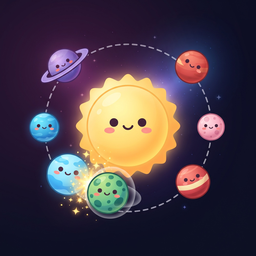

Planet Blast
Sevimli gezegenleri birleştirdiğin bir uzay bulmacası. / A merge puzzle with cute planets.
Destek
Bir sorun mu yaşadın, önerin mi var? Bize yaz: hkorkmaaz@icloud.com. Yazarken telefon modelini ve iOS sürümünü eklersen daha hızlı yardımcı olabiliriz.
Sık sorulanlar:
- İlerlemem nerede saklanıyor? Yalnızca telefonunda. Oyunu silersen ilerleme de silinir.
- Sıralamada adım neden görünmüyor? iPhone'da Game Center'a giriş yapmış olmalısın (Ayarlar → Game Center).
- Ses gelmiyor. Oyundaki ses düğmesini ve telefonun sessiz anahtarını kontrol et.
Support
Found a problem or have an idea? Write to hkorkmaaz@icloud.com. Including your phone model and iOS version helps us help you faster.
- Where is my progress saved? Only on your phone. Deleting the game deletes your progress.
- Why isn't my name on the leaderboard? Sign in to Game Center on your iPhone (Settings → Game Center).
- No sound. Check the sound button in the game and your phone's silent switch.